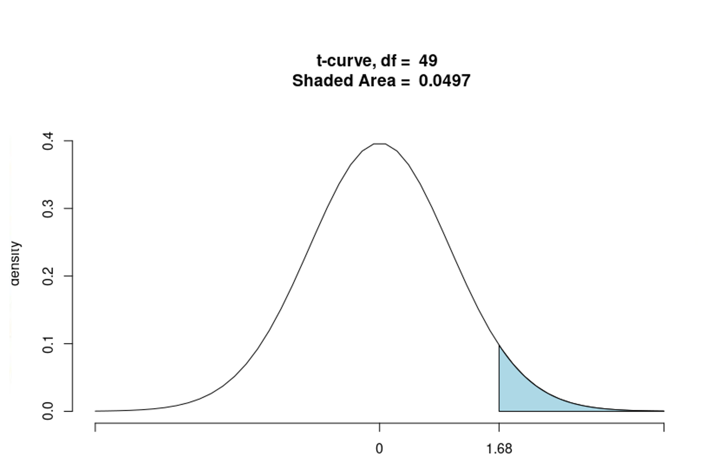

Quando se trata de comparar a média de uma amostra com a média de uma população, ou entre duas amostras, o teste de hipótese para a média é frequentemente utilizado. Existem diferentes tipos de testes de hipótese para a média, dependendo da situação. Veja a seguir.
Teste t de Student para uma amostra
Usado quando queremos testar se a média de uma única amostra é igual a um valor conhecido ou específico. É usado quando a distribuição da amostra é normal e o desvio-padrão da população é desconhecido. O objetivo é testar se a média de uma amostra é significativamente diferente de um valor específico (média populacional conhecida).
As etapas para realização do teste de hipóteses para a média de uma única amostra são:
Enunciar as hipóteses H0 e H1:
H0: μ = μ0
H1: μ ≠ μ0
Em que μ0 é a média populacional hipotética conhecida. As hipóteses enunciadas acima correspondem a hipóteses de um teste bilateral. Outras possibilidades são: H1: μ > μ0 (teste unilateral à direita) ou H1: μ < μ0 (teste unilateral à esquerda).
Determinar um nível de significância (α) aceitável: usualmente α = 5%.
Determinar a região crítica: usando a tabela da distribuição t de Student com n-1 graus de liberdade ou um software estatístico, determine o valor crítico para o nível de significância escolhido.
Calcular o valor da Estatística de Teste: para o teste t de uma amostra, a estatística de teste é calculada como:
Em que s é o desvio-padrão amostral, n é o tamanho da amostra, μ0 é um valor hipotético para μ e t é chamado estatística de teste.
Tomar a decisão com base na região crítica ou do p-valor. O p-valor é apresentado nas saídas dos softwares estatísticos. No R, o comando para realização do teste t de Student é t.test.
Na Prática!
Suponha que estamos interessados em verificar se, em média, a população de estudantes de pós-graduação está acima do peso, ou seja, média de IMC maior do que 25Kg/m2. Uma amostra de tamanho 50 da população forneceu uma média de 26,4Kg/m2 e desvio-padrão de 4Kg/m2.
Formule as hipóteses:
H0: μ = 25
H1: μ > 25
Nível de significância: 5%
Região crítica: para α=0,05 e 49 graus de liberdade (n−1), o valor crítico de t é aproximadamente 1,68 (baseado na tabela t).
Cálculo da estatística t:
Como o teste é unilateral à direita, rejeita-se H0 para valores da estatística de teste maiores do que 1,68. Nesse caso, rejeitamos H0, ou seja, os alunos de pós-graduação estão, em média, acima do peso.

Fonte: Elaborado pelo autor (2025).
Teste t de Student para duas amostras independentes
Usado a fim de comparar as médias de duas amostras independentes para determinar se existe uma diferença significativa entre elas. Esse teste pode assumir que as variâncias das duas populações são iguais ou diferentes.
Enunciar as hipóteses H0 e H1:
H0: μ = μ2
H1: μ ≠ μ2
Em que μ1 é a média populacional do grupo 1 e μ2 é a média populacional do grupo 2. A estatística de teste considera a diferença das médias amostrais dos grupos 1 e 2 com desvio-padrão amostral diferente para as duas situações: variâncias populacionais iguais ou diferentes.
Na Prática!
Suponha que estamos interessados em saber se a média de IMC é diferente em estudantes do sexo masculino e feminino: seja μ1 a média populacional de IMC do sexo masculino e μ2 a média populacional de IMC do sexo feminino. Podemos assumir independência entre os grupos, então o teste t para amostras independentes é adequado para responder à pergunta.
Para saber mais sobre o teste para duas amostras independentes, assista este vídeo..
Teste t de Student para duas amostras pareadas
Utilizado quando se quer comparar duas médias de amostras dependentes, ou seja, as mesmas amostras são testadas duas vezes, como antes e depois de um tratamento. As hipóteses são as mesmas do teste t para duas amostras independentes, com μ1 e μ2 representando, por exemplo, as médias populacionais antes e depois do tratamento. A estatística de teste considera a média e o desvio-padrão da diferença entre as medidas dos grupos 1 e 2.
Na Prática!
Suponha que estamos interessados em saber se a média de IMC no início do curso de pós-graduação é menor do que a média de IMC no final do curso: seja μ1 a média populacional de IMC no início do curso e μ2 a média populacional de IMC no final do curso. Nesse caso, podemos formular as seguintes hipóteses: H0: μ1 = μ2; H1: μ1 < μ2. Como os mesmos estudantes tiveram suas medidas registradas no início e no final do curso, então o teste t para amostras pareadas é adequado para responder à pergunta.
Para saber mais sobre o teste para duas amostras pareadas, assista este vídeo..
Teste para comparação de médias populacionais de 3 ou mais grupos
A análise de variância (ANOVA) é uma técnica estatística usada para comparar as médias de três ou mais grupos com o objetivo de determinar se há diferenças estatisticamente significativas entre eles. A ANOVA testa a hipótese nula de que todas as médias dos grupos são iguais. Se a ANOVA indica que existem diferenças significativas entre os grupos, isso sugere que pelo menos um grupo tem uma média diferente dos outros. A ANOVA compara a variabilidade entre os grupos com a variabilidade dentro deles.
Na Prática!
Suponha que estamos interessados em saber a média de IMC é diferente em estudantes pretos, pardos e brancos. Como temos três grupos de comparação, a ANOVA é adequada para responder à pergunta.